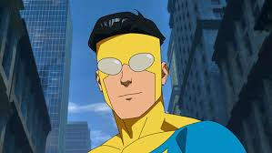

Interactive Tableau visualization

Invincible is one of the most intense and interesting superhero stories because it combines action, family conflict, loyalty, and huge moral decisions. What makes the show stand out is that it looks like a classic superhero story at first, but quickly becomes much more serious.
I picked Invincible because it is one of the most memorable superhero shows I have watched. The animation style is clean, the story moves quickly, and the characters deal with major questions about power, responsibility, and identity.

Some of the most important characters in the show are Mark Grayson, Omni-Man, Atom Eve, and Allen the Alien. Each one adds something different to the story.
This embedded YouTube video helps show the tone and action of the series.